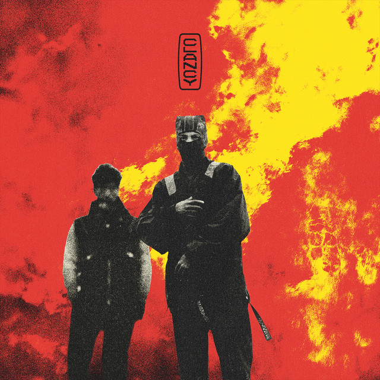

Out of all the records I have, the largest collection is the TOP one, despite also being the most recent one. This collection includes four vinyls, which are: Clany, Trench, Breach, and Blurryface. The albums are put in order of which ones I like best going from top to bottom. Normally I'd sort them by release, however since the focus is on the collection, I decided to do it this way instead. Another thing I'd like to mention about these albums is they tell a story, which is a thing that made me more interested the first time I heard about them.

As mentioned in the main page, this album was what got me into listening the rest of them. I like it the most out of all albums and the same thing can be said for the record itself. I also quite like the design of the cover, the gray figures compare nicely to the bright red and yellow background.

Trench is my second favourite album. The songs I like most from it are Jumpsuit, Morph, Nico and the Niners, Neon Gravestones and Bandito. The vinyl variant I own is a classic black, so there isn't much to say about it.

Breach is the newest released album. It was also the first record from TOP I got while I was looking for Clancy. The vinyl colour resembles light blue smoke and is transparent, which I think contrasts really nicely with the fully red album cover. This easily makes it my second favourite record.

Blurryface is an album I already heard of before, it was very popular when I was a kid. I gave it a listen and this time around I was actually able to understand the meaning behind the songs, which was refreshing. The two records inside are silver, they look nice and fit the album cover.